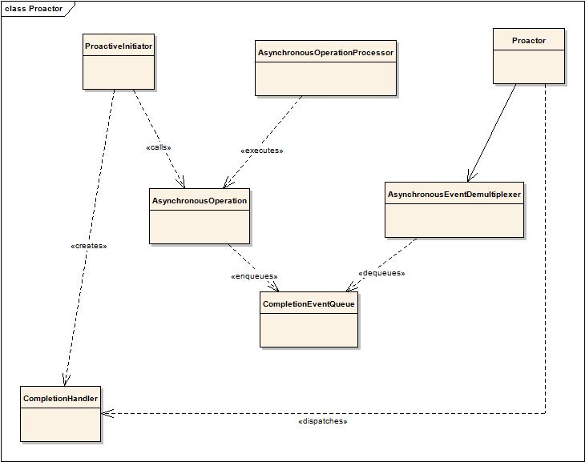

This is the design pattern behind Boost.Asio. See: Boost.Asio documentation for a full explanation. Boost Asynchronous is very similar. It supports enqueueing asynchronous operations and waiting for callbacks, with extensions: safe callbacks, threadpools, proxies, etc.